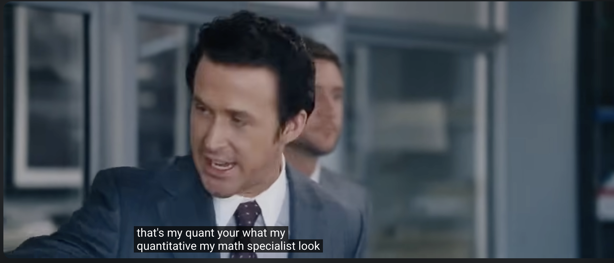

We Asked the Chinese Quant From The Big Short What Caused the Credit Crisis
…because nobody else did.
You remember him. Standing in the office, questioned about his numbers, Ryan Gosling's character nods at his quant: “He's my quant. My QUANTITATIVE!” Then, with a straight face, “His name is Yang, he won a national math competition in China, he doesn't even speak English.” Cut to the quant, who looks directly into the camera: “Actually, my name's Jiang. Jared likes to say I don't speak English because he thinks it makes me seem more authentic. And I got second in that national competition.”

So: second, not first; speaks English; called Yang by a man who never asked. We tracked Jiang down. He agreed to talk on the condition that we not waste his time, a condition we immediately broke by asking him to start with the popular theories about the Global Financial Crisis. What follows is that conversation. Where his answers were too compressed to be of use to a general reader, which was usually, I have stopped the tape and built a small interactive demonstration so you can see what he means. Think of me as the translator. Jiang thinks of me as overhead.
By the way: we did finally squeeze an answer out of Jiang, and because it is actually a very good one, I have tried to structure what follows so that the diversions on the road to it — the bad theories, the detours, his various grievances — are in part optional. The answer itself comes down to the three boxes below.
ℙ
objective probability
the real-world measure: the frequency with which things actually happen. The newcomer thinks this is the whole story.
ℚ
risk-neutral probability
implied by market prices; discounted prices are martingales and derivatives are valued under it. The sophisticated worldview stops here.
ℝ ?
the measure that caused the financial crisis
The core of Jiang's answer, and the one you were never taught. Think R for rating agencies; R for “Arrrrgh, I lost my firm ten billion”; but mostly R because if you only do statistics (say, in the R language) and never check the market prices, you'll lose your shirt.
Keep this nearby. Two of these three measures are taught in every quant programme on earth. The third, R, is the one that did the damage, and no course so much as names it.
First, a standard
Who shows up when a plane falls out of the sky?
Before the popular theories, a question Jiang put to me near the start. I had asked, mildly, why the public explanation went so wrong. He answered with a question of his own.
Jiang: When a plane falls out of the sky, who shows up?
The answer is more instructive than I suspected. When a plane crashes, the National Transportation Safety Board dispatches a go team of specialists to the wreckage within hours, and it runs the investigation under what it calls the party system. The rule could not be plainer: participation is strictly limited to parties that can provide direct technical expertise — the engineers who built the aircraft, the people who maintained it, the ones who flew it. Read that again: direct technical expertise, not the lawyers, and not anyone else who merely happens to have an opinion. Lawyers and insurance investigators are prohibited by law from taking part, because their job is advocacy and the investigation's job is truth.
Jiang mused aloud about how many of them had ever priced a single tranche of a CDO. It seemed worth checking, so I had Gemini build the roster and score it.
Authorship of the Financial Crisis Inquiry Commission
| Author — role and occupation | QUANTY? | Worked in structured finance? |
|---|---|---|
| Phil Angelides — chairman; California politician, ex-state treasurer | doubtful | no |
| Bill Thomas — vice-chair; retired congressman | no | no |
| Brooksley Born — derivatives lawyer, ex-CFTC chair | doubtful | no, regulated it |
| Byron Georgiou — plaintiffs' securities lawyer | no | no, sued it |
| Bob Graham — former senator and governor | no | no |
| Keith Hennessey — White House economic-policy adviser | doubtful | no |
| Douglas Holtz-Eakin — public-finance economist (tax and fiscal policy), ex-CBO director; co-wrote the dissent calling it “a mistake” to blame CDOs | maybe | no |
| Heather Murren — equity-research analyst (consumer stocks), left Wall St in 2002 | maybe | no |
| John W. Thompson — antivirus-software CEO | no | no |
| Peter Wallison — lawyer, think-tank fellow | no | no |
| Wendy Edelberg — executive director; PhD macroeconomist (Fed) | maybe | no |
| Greg Feldberg — research director; Fed bank-supervision analyst | maybe | no, supervised it |
| Chris Seefer — investigations director; SEC fraud attorney | no | no, investigated it |
| Gary Cohen — general counsel | no | no |
Ten commissioners, four staff authors. Ever built, priced, traded or rated a CDO: zero. The lone derivatives expert, Born, was a lawyer who had tried to regulate this market years earlier and been crushed for it by Greenspan, Rubin and Summers — proven right, ignored, and still the closest thing on the panel to someone who knew the instrument. (Roster compiled by Gemini Deep Research, cross-checked against the Commission's own biographies.)
The inquiry in The Big Short was, if anything, better arranged and more informative. Yet as Steve Carell, playing Mark Baum, travelled the country interviewing everyone he thought mattered — the mortgage brokers, the CDO arranger, the strippers buying six houses apiece — it never once dawned on him to speak a word to Jiang, or even to get his name right.
How Jiang really feels
Jiang: I didn't realise, until you told me, that they ban the lawyers outright. I had assumed they simply summoned the engineers, of course. Our financial system crashed and we convened ten politicians, lawyers, economists and executives, not one of whom had ever priced a tranche, and titled the chapter “The CDO Machine.” Then we let Ben Bernanke tell audiences the mortgages had been “packaged into securities that proved complex, opaque, and unwieldy.”
(Translator's aside: I also seem to remember Kevin Rudd turning up in Washington to explain that the economy was like a house on fire, and that the thing to do with a house on fire is to put it out. Then, one assumes, the same thing.)
Jiang: A green room of instant experts on structured finance, not one of whom had ever quoted a correlation. Of course they reached for the word complex. Complex is what you call a company that does nothing when you have decided, in advance, not to look inside the box.
I asked whether that was too harsh. He said it was the plainest way to put it, and that I should put it plainly, so I will: we never asked Jiang, not even in the movie.
The Hollywood theory
Behavioural economics
Me: The movie reached for behavioural economics. Selena Gomez and Richard Thaler at a blackjack table, the hot hand, “back-betting.” Greed, herding, irrational exuberance.
Jiang: The hot-hand fallacy is the belief, for no good reason, that a streak will continue. If a bucket has a hole, the water keeps running out. Believing it will keep running out is not a fallacy; it is noticing the hole.
To call that a hot-hand error you must be determined not to see the bucket, or the hole. So the Nobel behaviourist reaches for his pet bias, everyone nods, and nobody has to learn the structure. That is the Behavioural God of the Gaps. I would classify it as an opiate for the mathless, to mangle Marx.
The hot hand is the whole essay in miniature
Worth dwelling on, because it is this essay in miniature. The behaviourists' flagship example, the “hot hand fallacy,” was pronounced from a great height: a 1985 study found no streak effect in shooting data and declared the belief a cognitive illusion. It had quietly assumed that a player's shot difficulty does not change when he is hot. Anyone on the court knew otherwise. Get hot, and the defence swarms you, and the next one goes up from further out with a hand in your face.
Measure that, and the fallacy evaporates. Bocskocsky, Ezekowitz and Stein (2014) pushed 83,000 NBA shots through SportVU optical tracking, controlled for shot difficulty and defender distance, and recovered a real hot-hand effect of one to two points; hot players simply take harder shots. Miller and Sanjurjo (2018) then found a selection bias baked into the original analysis itself; correct it, and the canonical result reverses. The hot hand, they conclude, is not a myth.
The players knew. The crowd knew. It took the academy thirty years and a camera rig to concede the obvious. Swap the basketball for a tranche and you have the rest of this page.
How Jiang really feels
Jiang: Picture the equivalent. Feynman turns up to the Challenger inquiry and announces the culprit was a hot-hand fallacy: NASA had a run of successful launches and naively extrapolated. Not a word about the O-ring, the cold, the rubber that would not spring back. That is the calibre of what we got, daft, vacuous chaff thrown in the air after the crisis, and it took longer to settle than the ash over Pompeii.
Me: Was Selena Gomez more helpful than Richard Thaler here?
Jiang: Marginally. She literally says this is how a CDO works, then proceeds to … absolutely not tell us. She describes nothing beyond side bets. The scene explained the word derivative.
Me: Be fair. What she conveys is that this was not a regular bubble like the tulip craze, but a special kind, a derivative tulip craze. Surely that helps an audience.
Jiang: It is not a worthless reminder. But the original tulip craze was itself a derivative craze; the action there moved into forwards and options on the bulbs, exactly as it did here. So “derivative tulip craze” tells you nothing specific about this crisis. It just swings you back to the standard behavioural story: irrational bubbles arrive, and then everyone goes back to sleep.
I kept pressing him
Me: So no role for the hot hand, for chasing returns?
Jiang: (Mildly exasperated.) Look, of course there are people and institutions who should have known better, who should have known they were on too good a run. That was true of Bernie Madoff's investors too. But would you accept “hot hand” as the explanation there? Or as background radiation, the usual mild inefficiencies in economics that contribute to everything but explain almost nothing?
Honestly, I see where he is coming from. Behavioural economics and hindsight bias share a border that is mostly unguarded. Prices are, to first approximation, martingales: no drift you can lean on, and a deep drawdown sitting somewhere on almost every future path. So “the crash was always coming” is true of every market at every moment. That makes it free to say after the fact, and free to dress as a behavioural insight, a verbal put option that always pays. A parlour trick dressed up as insight.
And consider who these buyers were: credit investors. They knew perfectly well they were paid excess yield in exchange for risk; that bargain is thousands of years old. So the appetite for yield is not the puzzle. The puzzle is the widespread miscalibration, and only the actual mechanics explain that.
Jiang: Since you have decided to talk out loud about martingales, let me finish the thought. Market prices are continuous to a first approximation, so every roughly efficient market is, up to a time change, just Brownian motion. You could change the speed at which you run the tape through the projector, play financial history fast or slow, and the behaviourists and the bell-curve haters would sit there arguing about nothing the whole time. It is a theorem. A fucking theorem.
The sophisticated theory
Hidden tail dependence
I knew I would lose Jiang if I rattled off all the stupidest theories before reaching one he could get his teeth into, so I headed straight for the “academic” explanation. This does, I admit, take us slightly ahead of ourselves on the underlying mathematics, but I think you'll get the joke.
The sophisticated story goes like this: the models used a Gaussian copula, and a Gaussian copula has a real, provable property, zero tail dependence. Precisely: for any correlation below one, the coefficient of tail dependence is zero, so the probability that one name is in extremis given that another is vanishes in the limit.
It can still produce plenty of joint defaults at finite thresholds (crank the correlation and the whole pool can go), but it cannot keep them coupled asymptotically, in the deepest part of the tail. That asymptotic gap, a hidden contagion invisible to the covariance, then gets nominated as the culprit.
I told Jiang I found the argument genuinely interesting. He said he did too, which is why he had me build a whole demonstration of it. Throw shocks, or hit Fast +1000, and watch the joint-default tail pull away from the Gaussian copula fitted to those very same correlations.
Me: So tail dependence. That's the answer?
Jiang: No. It is the prettiest wrong answer. The fact itself is real, and genuinely useful elsewhere — useful enough that I built a portfolio method on it. But the crisis did not turn on a subtle higher-order property a covariance can't see. The failure was first-order, and crude. The marginals were wrong by about a factor of two; the correlation, by more than a factor of two.
Me: Wait, whose correlation? Are you saying you got it wrong?
Jiang: I came second in a national competition, remember. I know the foundations of finance from first principles — and, for that matter, the foundations of functional analysis, which is where this stuff really leans. Not my correlation. The rating agencies', taken off stale actuarial tables, and the entire buy-side that leaned on those ratings without ever glancing at the price two screens over. When your inputs are off by multiples, whether your copula has exactly the right asymptotic tail is an academic question. You mispriced the thing long before any tail subtlety could matter.
I asked him to hold that factor-of-two; we would need it later, with a demonstration. He told me to stop narrating and ask the next dumb question.
The loud theory
Taleb and the bell curve
Me: Taleb, then. The bell curve, the fat tails, the normal distribution.
Jiang: That one isn't sophisticated, it is the opposite, and it has muddled public understanding of the crisis more than any other story told about it. The machinery ran on a Gaussian copula, not a Normal distribution of returns. The marginals (stat-speak for the probability of default of each individual asset in the portfolio) were never a modelling choice: each name's default probability was pinned by its CDS spread, the price the market was already quoting. The one free knob was the correlation, and by Sklar's theorem the copula carries the dependence entirely separately from those CDS-fixed marginals. Blaming the bell curve is blaming the one part of the model nobody chose.
What I think Jiang really thinks
Ryan Gosling knows more about CDOs than Nassim Taleb does, by virtue of having read the script.
Me: But didn't the quants naively assume thin tails: Gaussian returns, crashes rare?
Jiang: And there it is, completely ignoring my previous answer. Clearly I was not blunt enough, so I will say it again, slowly. Modelling the losses on a CDO with a Gaussian copula has, for all intents and purposes, absolutely nothing to do with the normal distribution. They share the word Gaussian and nothing else that matters, the way a hot dog shares a word with a dog. And while we are clarifying things at this level: a guinea pig is neither a pig nor from New Guinea.
The copula is the dependence; the marginals were the CDS spreads, handed to us by the market. But I can see you want me to proceed as though I were the clown who slapped a single univariate normal in place of an actual risk calculation, because that is the only version a massive pool of unconsidering humans — the ones whose egos Taleb is in the business of stroking — could ever get their heads around.
Fine. Even if that were the case, which it was not, the story still collapses. Anyone who priced this for a living knew the tails were fat, and 1987 settled it twenty years before any of this.
Black Monday could, by the identical logic, have been pinned on Black–Scholes and its constant volatility; the market's answer was immediate and permanent, the volatility smile, a standing monument by 2007 to the plain fact that practitioners knew returns weren't Gaussian and crashes weren't rare. To believe otherwise you have to believe every desk that priced this paper was staffed by idiots.
Me: But Taleb was prescient, you have to admit. Isn't it true that people underestimate small probabilities?
Jiang: Let me put it this way. You have to be remarkably incurious to write a whole book about the longshot effect without realising it is called the longshot effect. And then to get the sign backwards on top of it — a century of racetrack data says punters reliably over-bet the longshots, not under. You no longer even need the racetrack: the prediction markets publish their calibration live, and it points the same way, small probabilities over-priced, never under.
A confession from the translator
Jiang is being a little harsh, perhaps, though there is a small price for selling books that accuse an entire profession of being idiots, and Taleb should probably have a thicker skin. I know this because, years ago, I made a video with sentiments quite similar to Jiang's, that went micro-viral and that even his own admirers enjoyed; it bought me a permanent place on his public “list of smear artists,” filed there as “some type of failed quant/mathematician with savantic attributes.” (Good company, mind you: the same list has the forecasting scholar Philip Tetlock down for “mendacious, perfidious behavior.” One takes one's honours where one finds them.)
That last entry is not only temper. The Black Swan leaned throughout on autism as an epithet — science as “an autistic enterprise,” the recurring “Dr John” caricature of the literal-minded fool — and I was among the very few at the time to call it what it was: a brazen attack on autistic people dressed as iconoclasm, unremarked by the Harvard Business Review and every outlet that lionised the book.
What Jiang actually calls Taleb is unprintable; the politest I can manage is drooping clucking front. The contempt is not about the man's mathematics, which in his early derivatives books was genuinely good. It is the spectacle of the worst mis-explanation in financial history calcifying into received wisdom while the actual mechanism went undiagnosed.
The famous theory
David Li and the formula that killed Wall Street
W I R E D
Recipe for Disaster: The Formula That Killed Wall Street
In the mid-’80s, Wall Street turned to the quants… until one of them devastated the global economy.
So we move on, having accepted that the Gaussian copula is not the normal distribution. I did have to press Jiang further on this model, given the infamous article by Felix Salmon.
Me: Then why is the most-read thing ever written about the crisis built on exactly this idea: David Li, the Gaussian copula, Felix Salmon's “The Formula That Killed Wall Street”? If the formula story is so wrong, why did it get written at all?
Jiang: Because it is a wonderful story, and a wonderful story does not have to be true, it has to be clean. One lone genius, one beautiful equation, hubris, collapse — you can teach it in a sentence. Salmon, to his credit, actually interviewed me. I told him roughly what I have told you. He decided my answers did not fit the story and left them out. No editor alive spikes “the formula that killed Wall Street” to run “the combined actions of the buy side and the agencies amounted to a measure-theoretic mistake that is ubiquitous in prediction generally, is not taught in schools, and is likely to be particularly catastrophic in combinatorial betting.”
Me: It was not only Wired. The same formula story ran in Significance, the Royal Statistical Society's own magazine, under the line “a formula in statistics, misunderstood and misused, has devastated the global economy.”
Jiang: The Royal Statistical Society? That's frigging unbelievable. The body that owns the word printed the claim that a statistical formula devastated the economy, and ran this beside it: that Li “took a notoriously tough nut, determining correlation, and cracked it wide open with a simple and elegant formula.” That is manifestly false in every clause. He did not determine correlation; a copula does not determine correlation, it consumes one, an input you must fetch from somewhere, ideally the market. He did not crack anything wide open; the latent-Gaussian threshold was Merton in 1974 and Vasicek in 1987, and the copula itself is Sklar, 1959. And the correlation that was wrong in 2008 was not his, it was the number the agencies fed in. A statistics magazine, of all of them, should know the difference between a formula and the data you push through it.
Jiang: Here is what nobody who blames the formula will actually do: look at it. To say a formula killed Wall Street, or the dumber claim that the normal distribution did, you first have to understand the thing well enough to indict it. Almost no one did. So here is the model.
The model, up close: conditioning, convolution, quadrature
Nobody did it Li's dumb way. No desk priced a CDO by Monte Carlo over a copula, at least not for most purposes. “I devised, implemented and deployed the fast semi-analytic version,” Jiang says, “and the same happened independently at other banks at the same time, because the method is forced by the problem. I shipped it as an Excel add-in compiled from MATLAB. Try getting that to work across sixty installations of Office and you will understand why there was never a version 1.1.”
And it is busywork. Pricing a CDO in the one-factor model is routine conditioning, convolution and quadrature. Condition on the common factor and the names go independent; convolve their conditional default indicators into a loss distribution; integrate over the factor with a handful of nodes. Exact, instant, no mystique. Run it:
Drag ρ: the loss distribution swings from a tight binomial (defaults roughly
independent) to an all-or-nothing bimodal shape (mostly no defaults, punctuated by the whole pool
going). The thin curves are the conditional loss distributions at three values of the common factor; the
bold bars are their quadrature average. Drop the node count and watch how few points it takes to converge.
That is the entire “fast model.” The senior tranche, riskless-looking at low ρ, becomes a
catastrophe bond as ρ rises — structural fragility driven entirely by correlation, with
the marginal p (the CDS-implied default probability) held fixed.
The seduction theory
Quants seduced by an elegant formula
Me: Salmon's piece made a subtler charge than “the formula did it.” It blamed the formula's beauty. Li had, in those pages, cracked correlation wide open with something “simple and elegant,” and the moral became that a generation of quants fell in love with that elegance and stopped checking. Seduced by the formula.
Jiang: That one I take personally, because it gets the aesthetics backwards. The object was ugly. A mathematician finds a CDO model about as elegant as a tax form. Nobody fell in love with it; we held our noses and used it. The seduction story needs a beautiful thing at the centre, and there isn't one.
It also has the direction of every arrow wrong. It needs the people who built the model to be the same ones who trusted it blindly, and they were not. The builders could see exactly where it broke. The people who leaned on it without checking had never opened it.
The pivot
So what actually happened?
Okay. Let's take a really novel approach and actually consider what happened. I asked Jiang why he pushed back so hard on the notion that CDOs are complicated.
Jiang: Somebody built a company that does nothing, and got paid for it. Let me show you the company.
An orphan entity on an island: bankruptcy-remote, no staff, no premises, no business. It buys a pile of bonds, collects the coupons, and passes the cash to investors in slices, or tranches, in strict order of seniority — the top slice is made whole before the next sees a cent, and losses eat the bottom slice first. What gets sold are the notes it issues, each a claim on those cashflows: a collateralized debt obligation, a CDO. The company is just the vehicle.
Me: Every official account calls this instrument complex. The Inquiry Commission gave it a chapter titled “The CDO Machine.”
Jiang: The vehicle that issues a CDO is the least complex company on the planet: a box that buys bonds and pays them out in order of seniority. The only idea in it is the oldest idea in finance, subordination — who gets paid first. A bodega is more complex. A car wash is more complex; a car wash has employees, and weather, and a float. The single thing a structured-finance vehicle does — the only thing — is raise debt and invest its spare cash, which is what every company that has ever issued a bond also does. Calling it complex is a dodge.
So if it does nothing, where does the money come from? Not the assets; on the assets alone the thing is worth less than its inputs; you have added a lawyer, a trustee and a brass plate and subtracted nothing risky. It was always the ratings. The empty company is a ratings-transformation machine: pour in a pool of BBB collateral, apply subordination, and the agencies' model hands most of the stack back stamped AAA. The value created out of nothing is precisely the gap between the market-implied default probabilities of what went in and the rating-implied default probabilities of what came out.
Watch the lunch appear and disappear:
The Market (Q) column sets the default probability and correlation the market is quoting; each tranche's fair coupon is its expected loss under those, and the fair coupons sum back to the pool spread exactly — money in equals money out, arranger profit zero. Now move the Ratings (R) column away from the market's: those are the numbers the agency uses to price the AAA senior, and the only place a profit can hide. Set the two columns equal and the free lunch vanishes.
Two numbers are in play here and they disagree. The market quotes one default probability, with real money behind it; the rating agency uses another, an actuarial estimate from a table. The entire perpetual-motion machine is the wedge between them, and the crisis is the story of an industry betting half a trillion dollars and expecting reasonable compensation, in the form of a risk premium, in return.
Why that gap is not merely a bad estimate but a different kind of mistake, one with a name, is the thing I finally got Jiang to spell out. We will get there.
Jiang doesn't think everyone is stupid
One thing that emerged from talking to Jiang is that his seething contempt was aimed largely at the blowhards outside his industry, not at the rating agencies themselves. He plainly wanted a theory that did not, unlike the instincts of the Thalers and Talebs of the world, require that vast swathes of employees at the funds, the agencies and the sell side be idiots. On the contrary: they were manifestly better schooled in statistics than the people brought to the crash site.
Aside on capitalism
There is nothing wrong, and a great deal right, with paying people to bear risk. That is what a credit market is for, and the risk premium is its wage. Buying a risky bond and expecting to be paid for the risk is not a delusion; it is the system working as designed. The failure was never the appetite for risk. It was the price put on it, a number computed with the market switched off.
The model was ugly, not beautiful
Sklar on time, and the hazards that jump
We will get to that. But first I needed to press Jiang on the claimed mathematical elegance, because the theory that the models ran amok pretty much requires that the people who built or used them were blind to their flaws.
Jiang: Here is the ugliness, concretely. The construction takes Sklar's theorem — the distributional transform, a near-triviality — and staples it onto default times. Which immediately begs the question the static picture cannot answer: what happens after time zero? The only honest move is to condition on what you've learned — who has defaulted, who survives — and the moment you do, two things break. You leave your own model class, and the implied hazards of the survivors jump. Watch a five-name basket.
The same name, two baskets, two hazards
The conditioning is basket-specific. A survivor's implied hazard depends on the default pattern of the other names in its basket. In 2006 a name like Ford or GMAC sat inside dozens of CDOs at once, and each basket handed it a different default process. Ask CDO A and CDO B how likely that name is to default tomorrow and they disagree, because each conditions on its own peers. A coherent model attaches an intensity to the name; the copula attaches it to the basket, and the baskets contradict each other. “That inconsistency,” Jiang says, “not the bell curve, is the genuinely damning property, and it is invisible until you ask the static picture to live through time. Chasing tail dependence misses it entirely.”
Base correlation: the kludge that became a market standard
If you still suspect practitioners were seduced by elegance, look at what the market actually quoted. The natural idea, compound correlation, reads a single Gaussian-copula correlation out of a tranche price the way you read implied vol out of an option. It doesn't work: a mezzanine tranche's expected loss is not monotone in correlation, so a given price corresponds to two correlations or none. So J.P. Morgan published a fix — base correlation — and it became the quoting convention overnight.
Off the record, Jiang on base correlation
Base correlation made me want to puke. Look at what it is: a change of coordinates chosen for no reason except to make a broken model emit a single number. The base correlations you back out are not equal across detachments; they form a rising skew, which a true single-correlation Gaussian copula could not produce — one model, one correlation. The skew is the model screaming that it is wrong, and base correlation's contribution was to write the scream down neatly and call it a quote. That is the opposite of being seduced by elegance. It is a profession holding its nose and agreeing on a common lie so that trades can clear. Everyone knew. We quoted it anyway.
Left, compound correlation: the mezzanine's expected loss vs ρ is a hump, so a market-price line crosses it twice (or never). Right, base correlation: the base tranches are each monotone, so any level inverts to a single β — but the two βs differ, and that gap is the base-correlation skew a one-correlation model could never produce. Well-posed and dishonest at once.
Non-models are better
The dumbest theory, with the dumbest demo
Me: There is a tempting moral in all of this: that we would have been better off with no models at all. Drop the copulas, drop the mathematics, trust seasoned judgement.
Jiang: That is the agencies' own defence, and it is precisely how they blew up. They will tell you they never touched these fancy copulas; they reached for something they called sturdier, a non-model, the Binomial Expansion Technique: read the loss off a binomial, with no correlation input at all. It sounds prudent. It is the opposite of robust.
So I put it on a dial.
Drag the copula's correlation: more clustering, a fatter loss tail, a senior tranche that slides from safe to ruined. Now watch the diversity-score curve. It never moves. The Binomial Expansion Technique has no correlation input; the diversity score fixed it (here a frozen ≈5%) the instant the pool's industries were counted, and there is no dial to turn. That is what “robust non-model” meant in practice: a model that cannot be wrong about correlation because it is not permitted to have an opinion that changes.
Me: So “no model” was not the safe choice.
Jiang: “No model” is a model. Everything is a model: a mental model, a bad mathematical model dressed up as a non-model, whatever you like. This one is the third kind, and a spectacularly stupid one. It welds correlation to a constant and throws away the dial, so that when the world moves your number cannot. That is not the absence of an assumption; it is the single most reckless assumption on the menu, with the evidence of it designed out of view. Doing away with models does not save you. Feeding them the market does.
Jiang: Getting a number wrong out loud, where it can be stressed and re-marked, is a venial sin. Refusing to let the number exist at all is recklessness dressed as prudence. A model that cannot hold an opinion about correlation cannot be wrong about it, and cannot be corrected either. Fortunately the agencies were adopting actual models by then. They just got the inputs badly wrong, and that is their fault, not the model's. The reason they got it wrong is more interesting than it looks. Whether you have the patience to follow me all the way to it I genuinely cannot tell yet, but I am willing to find out.
In the land of the blind
And so our discussion turned to a subtler failure, the one that survives even when an agency did reach for a copula: they fed it the wrong correlation, taken from historical, actuarial studies, and the numbers were strikingly low — S&P's evaluator assumed 0% across industries before late 2005; Moody's roughly 3%. Two screens away, the inter-dealer market in CDO tranches was quoting prices that implied a far higher number. Implied correlation is the figure you must put into the model to reproduce a traded price, exactly as implied volatility is read out of option prices — the market's own view of joint-default risk, priced by people with money at stake. Back it out of a simple contract that pays if k or more of a five-name basket default, and see how far above 5% it sat.
The curve is the contract's fair price as a function of correlation (one-factor Gaussian copula, marginals fixed by CDS). Drag the market price: where it meets the curve is the implied correlation. The dashed line is the agencies' actuarial number (≈5%). Read off how little they charged for joint default, and how much further right the market's number sat. Switch contracts (2+/3+/4+) and it shifts — the correlation smile, inconsistent like the options smile, and exactly as indispensable.
Jiang: Ignoring a live market price in favour of a stale historical estimate is close to the cardinal sin. It deserves a name, and it has one, but you have not earned it yet.
The clean answer
P, Q, and the measure that should never have been called P
This is the answer I promised at the very top: the good one, the one Jiang says was worth the detours. He made me stop writing and listen.
Jiang: School hands you two probability measures. P, the physical measure, your honest best estimate of what will actually happen. Q, the risk-neutral measure, under which discounted prices are martingales. Harrison and Kreps wrote it down in 1979 and Harrison and Pliska finished the job in 1981, though really de Finetti had laid it down in the 1920s: Q exists exactly when there is no arbitrage. You learn to move between the two and you go to work believing that is the whole kit.
Me: It isn't?
Jiang: Read the definition of P again. Your best estimate of objective probability. Best. Now answer me: is the price the market is quoting two screens over, with real money behind it, information? Obviously. It is some of the best information you will ever be handed. So if you build your “objective” estimate and deliberately throw that information away, you did not compute a P measure. You computed something poorer, and you have no right to keep calling it P. Call it R. The agencies' measure: pure statistics, unassisted by the best information-aggregation device ever built, the market price, deliberately left out.
So I drew it for him, because this is the one picture that holds the whole crisis.
A word on that last box. When I write “optimizer,” Jiang is being terse; he means, more plainly, use the probabilistic information to decide. To a first approximation that is what economic activity is, so he does not belabour it. With CDOs it was not even an approximation: the assets were chosen by literal mathematical optimization, genetic algorithms and the like, packing in the maximum risk subject to the rating agencies' model constraints. There was a company whose whole purpose was to help banks run exactly that optimization. It was called CodeFarm. So much for the behaviourists who insist optimization is a poor first approximation to economic activity. Here the economic activity, to the last basis point, was a literal optimization.
Jiang: Picture a bookmaker who never once glances at the prices his competitors are posting. Or a market maker who throws a bid and an offer onto the screen without looking at where the thing already trades. You know what we call that person. Gone. It is not a delicate error, it is instant death, in market making, in gambling, in anything with a live price sitting next to you. The survivor's instinct is to pull your own number toward the market. A statistician hears “shrinkage” there and means something more particular by it, so mind the word, but the direction is exactly right. Every professional gambler who lasts does this out loud: the market line is an input to their line, never an embarrassment to be ignored. All of them. The ones who don't aren't gamblers, they are the reason the rest get paid.
Me: The translator has a name for the law underneath this.
Jiang: He does, and this time it earns its keep. The Indispensable Markets Hypothesis: wherever a well-established market exists, anyone who refuses its prices as inputs will under-perform out of sample. The market need not be efficient. It is indispensable regardless. Read his book: the market keeps winning even against people who were handed its own numbers.
Jiang: There is a sharper way to name what goes wrong when R walks into that optimizer. It is a type error. Financial theory defines operations on two measures, P and Q, and on no others. There is no financially justified thing to do with an R number; the calculus is algebraically plausible and financially meaningless. A sound system would have refused to compile. Instead the number type-checked as if it were P and the program ran. An entire profession computes R every day under the impression it is computing P; I wrote it up, years ago, as the crisis that should have been caught by the compiler.
Jiang: Then it gets worse, because a CDO never uses the number once. Multiply R probabilities together, through a binomial, through a tranche, through a CDO-squared nested eleven levels deep, and the error does not sit still at the size you made it. The agencies were using a correlation of three to five percent while the inter-dealer market implied twenty to thirty. Push a gap that size through the combinatorics, through the convolution and the subordination and every joint-default term, and it compounds without end: a factor of two on one name becomes orders of magnitude on the senior tranche, and you watched that on the dial earlier. That is the whole answer. Not a black swan, not a bell curve, not a beautiful formula. A measure that called itself P, was really R, type-checked anyway, and then got raised to a power.
And the picture is not rhetorical. Open the gap between the market's correlation and the agency's, then nest it, and watch the senior tranche's understatement climb a log axis:
Senior [7–100%] expected loss under the market's correlation versus the agency's R. One CDO already understates it by a large multiple; a CDO-squared prices a pool of these same tranches with the same wrong number, so each layer multiplies the error. “Raised to a power,” made literal.
Me: But investors knew the ratings ran optimistic. Didn't they take them with a grain of salt?
Jiang: They did, and on a single bond it even worked. A rating is an R number; a seasoned buyer would shade it toward what the market implied, add a grain of salt, and land near P. That is the correct move, folding the market back into R to recover P, exactly what I have been preaching. The trouble is where the salt goes. A CDO multiplies, and salt does not distribute across a product.
Me: Let me read this grain-of-salt theory back to you. To get P×P you need (R + salt)×(R + salt), the correction folded into every name before they are multiplied. What investors were handed was R×R, already compounded into one AAA stamp, with a single grain sprinkled on the answer. R×R plus a pinch is nowhere near P×P. The error was baked in long before the salt arrived.
Jiang: And that is the whole shape of the thing. It is why the ratings could be roughly fine for decades and then fail in about six years. On single bonds the grain of salt was enough; R plus a pinch sat close enough to P that nobody was hurt and the system looked calibrated. The ratings did slip somewhat around the turn of the century, as the agencies' business exploded into structured credit; but a slipping rating is a venial sin. The decisive change was that the business turned to multiplying them, tranche on tranche, CDO on CDO, and a gap that had been survivable for a generation was suddenly raised to a power. The misalignment grew a little. The exponent grew enormously.
I asked whether that was the sentence he had spent twenty years waiting to see written down. He said it was, and that I should set it in the plainest type the page allowed.
A word on why the name matters. A behaviour you cannot name precisely, you cannot stamp out. Telling people to do “good” modelling and avoid “bad” modelling is as useless as telling them to “drive safely”; it picks out nothing they can catch themselves doing. “Drunk driving” works as a rule because it names one specific, tempting, common act. Modelling under R is the drunk driving of quantitative work, and now that it has a name we can begin to stamp it out. We have a long way to go.
R-probability
An estimate of an objective probability that deliberately ignores the relevant market price. Not a true P (which would use all available information, the market included), and not Q (the market's own), but a third thing: statistics with the market switched off. Rating agencies manufacture it by the ton; so, left to its defaults, does most of machine learning.
Jiang's commandment
Never use R-probabilities. Ever.
A note from the translator
Whose voice this has been
My resemblance to Jiang is mildly uncanny, at least as judged by the three or four things The Big Short troubles to tell us about him.
I did not know Jiang at the time. I have no idea whether he ran a mildly secretive research group building computational methods for pricing entire universes of CDOs at once, through time. Perhaps I competed against him in the Asian Pacific Mathematics Olympiad and lost badly. What I can safely assume is that he found some or all of the same tricks I did, probably around the same time, and certainly before the academics did. And he would, undoubtedly, have used optimizers to choose the CDO's assets too.
The only thing I am completely certain of: nobody really asked Jiang what his opinion was, not even Ryan Gosling.
And if you want proof that the lesson, build P from Q and R, has not been learned, look at the M6, a year-long forecasting contest run only a few years ago, real prize money, hundreds of entrants out of the machine-learning and data-science world. They were asked, in effect, for P: honest probabilities for stock returns. Almost to a person they produced R, fitting models to history and never once consulting the market. I entered a deliberately lazy benchmark that did nothing but read the options market. Not even a real P, mind you, pretty much raw Q. It climbed steadily up the field all year and finished in the top few percent, beating the R-measure modelling of nearly all of some two hundred teams, effortlessly.
| # | Team | Forecast skill (RPS, lower is better) |
“Decisions” (IR) |
|---|---|---|---|
| 1 | StanekF_STU (CERGE-EI) | 0.15735 | 13.39 |
| 2 | MP – Miguel Pérez Michaus | 0.15661 | 3.66 |
| 3 | Peters_STU | 0.15801 | 4.77 |
| 4 | Innovation Team (Mathco) | 0.15922 | 3.01 |
| 5 | Rogal Dorn | 0.15968 | 6.59 |
| 6 | QuantM6.ai | 0.15979 | 4.97 |
| 7 | microprediction — just the options market | 0.15850 | 0.76 |
I wrote the finding up, and the paper was rejected by the very people who run the competition. Embarrassed, I suspect, and so they missed the part worth keeping. The mistake those two hundred teams had just made, modelling under R while a market quoted Q two screens away, is exactly the mistake the rating agencies made in structured finance; or, to be precise about it, the mistake the agencies and the buy side made between them. The M6 was the credit crisis re-run as a clean, controlled experiment. The field made the same error, and then declined to notice it had.
Two decades after the crisis, the lesson, that you build P out of Q and R and never out of R alone, is exactly as unlearned as it was in 2007. That is the bad news.
And why nobody fixed it at the time
The warnings, back then, landed and changed nothing, because nothing in the incentive structure rewarded acting on them. The carry was good, the capital rules did not charge for the systematic tail, and a flaw everyone could see was a flaw nobody was paid to fix. Banks run in cycles, power swinging between desks and risk groups, and you can guess which way the pendulum pointed in 2004 and 2005. When the people who can see the flaw report to the people paid not to, the flaw is safe.
The good news
Mathematics has a sneaky way of being useful everywhere
The elegant mathematics underneath the CDO was swept to the floor at the time as useless. It was not useless. It was early, and mathematics has a sneaky habit of turning up useful somewhere else entirely. Indulge me while I tell it, in my own voice now.
The work I keep wanting to recreate rested on two ideas: the symmetries of a CDO, and de Finetti-style decompositions of the joint default distribution. The companies in a CDO are plainly not exchangeable — Ford is not GMAC is not a Florida homebuilder — but the CDO's cashflows are. The waterfall pays out of aggregate losses; it never names a company. So for the sole purpose of pricing, there is always a purely exchangeable default model that reproduces the same cashflow distribution. The heterogeneity that felt essential is, for pricing, something you can symmetrize away losing nothing. And once defaults are exchangeable, de Finetti's theorem applies: the law is a mixture of conditionally-independent ones. The diversity score was a crude, frozen shadow of exactly this decomposition, collapsed into a single number instead of an exact, dynamic one.
nature's true model𝔼φ*[ i(t=3) ]
=
nature's symmetrized model𝔼ψ=Uφ*[ i(t=3) ]
=
any model in the same orbit𝔼φ∈O(φ*)[ i(t=3) ]
Care only about an aggregate — the number of defaults in a pool, the number of infections after three days — and that quantity is a symmetric function of who-is-who, so it cannot tell nature's true (heterogeneous) model apart from its symmetrized twin, nor from any model on the same orbit under relabelling.
See it: a heterogeneous pool and its exchangeable twin
Three names with different default probabilities and a positive correlation. The left panel is nature's heterogeneous joint distribution; the middle is its symmetrization (the average over the six relabellings), perfectly exchangeable. They are visibly different distributions. Yet the right panel — the distribution of the number of defaults, all a CDO waterfall ever sees — is bit-for-bit identical under both. Drag the sliders; the two aggregates move in lockstep.
Not special to the Gaussian copula; it holds for any default model, because it is a statement about the payout's symmetry. It is also the honest version of the diversity score: not “pretend the names are identical,” but “replace them with the exact exchangeable law that prices identically, then decompose that.”
For the practitioner: stochastic recovery
One wrinkle for anyone who actually priced these. Recovery on a defaulted bond is not a constant; it is random, and correlated with the very factor that drives the defaults. So the honest exchangeable decomposition has to carry a stochastic recovery rate, not a flat number, or it quietly understates the senior tranche all over again.
The careful version: valuing CSOs under an exchangeable assumption.
“Negative energies and probabilities should not be considered as nonsense. They are well-defined concepts mathematically, like a negative of money.” (P. A. M. Dirac, 1942)
A connoisseur's aside. The finite decomposition can need a signed mixing measure, so you may have to dip into negative probability, which, pace Dirac, is perfectly respectable. But here is the quiet gift of this problem: when defaults are positively correlated, as credit defaults overwhelmingly are, the decomposition stays inside the genuine, non-negative simplex. That is the benefit of positive correlation. I noticed the identical move solves a problem in epidemiology too, and wrote up a “Fundamental Theorem of Epidemiology” and a clean resolution of the herd-immunity paradox during COVID. The topic, I am convinced, is deep, and the connections keep multiplying, lately into conformal prediction, which is a univariate cousin of the CDO analytics from 2000. The same decomposition that looked, back then, like a mere computational trick turns out to run surprisingly deep.
For the record: the quants knew (you don't start a company to fix something you think is great)
Me: The tidy morality tale needs the quants to be naive. Dazzled, blind to the cracks.
Jiang: None of those flaws were hidden from the desk. They were obvious to anyone who pushed the model past time zero, and its moving parts could not have been simpler. The dispositive evidence is the simplest kind: you do not start a company to fix something you believe is already great. At the end of 2006, with the issuance machine running flat out and the warnings going nowhere, I founded a company whose entire reason for existing was to fix the credit models. That is not the act of someone seduced by an elegant copula. It is the act of someone who had seen exactly where it broke and could not get anyone to care while the carry was good.
So that is the answer, and the man who finally gave it. A company that does nothing, a measure that should never have been called P, and an error raised to a power, told by the quant everyone called Yang.
Jiang got second in that competition, by the way. He asked me to mention it. Twice.